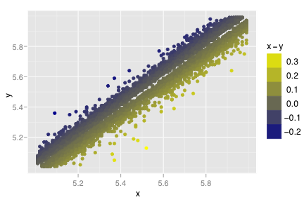
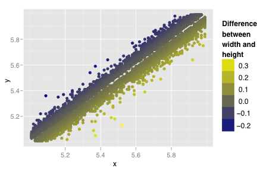
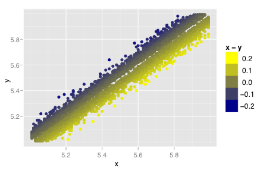
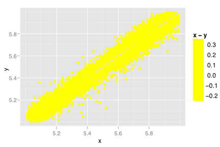
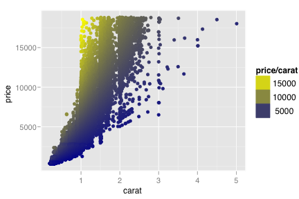
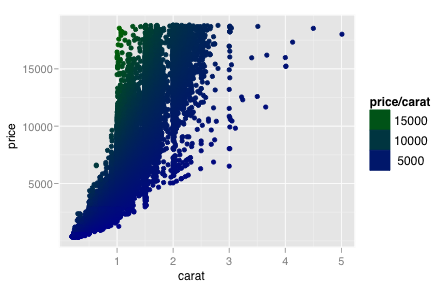

scale_gradient2
Colour gradient, with midpoint
Details
See also
- scale_color_gradient: continuous colour scale with midpoint
- colorRamp: for details of interpolation algorithm
Examples
> dsub <- subset(diamonds, x > 5 & x < 6 & y > 5 & y < 6) > (d <- qplot(x, y, data=dsub, colour=x-y)) > > d + scale_colour_gradient() > # Change scale name > d + scale_colour_gradient(expression(x - y))  > d + scale_colour_gradient("Difference\nbetween\nwidth and\nheight")  > > # Change limits and colours > d + scale_colour_gradient(limits=c(-0.2, 0.2))  > d + scale_colour_gradient(mid="black", high="yellow", low="yellow")  > > # You can also use a non-zero midpoint > (d <- qplot(carat, price, data=diamonds, colour=price/carat))  > d + scale_colour_gradient(midpoint=mean(diamonds$price / diamonds$carat), high="darkgreen", mid="yellow")  > > # Fill gradients work much the same way